Кадровое агентство ТРИЗА-Спутник
Инструкция по работе
с админ-панелью сайта
Как добавлять вакансии и новости
Сайт: modx.romanovivv.ru
Пошаговая инструкция с фотографиями экрана
для сотрудников без технической подготовки
Содержание
- 1. Вход в админку
- 2. Обзор панели управления
- 3. Как добавить вакансию (пошагово)
- 4. Дополнительные поля вакансии
- 5. Как изменить или убрать вакансию
- 6. Как добавить новость (пошагово)
- 7. Горячие вакансии на главной
- 8. Частые ошибки и шпаргалка
1. Вход в админку
- Откройте браузер (Chrome, Firefox или Edge).
- Введите адрес: https://modx.romanovivv.ru/manager/
- Введите логин и пароль (выдаёт разработчик).
- Нажмите «Войти».
Рис. 1 — Страница входа в панель управления
2. Обзор панели управления
После входа откроется панель управления. Слева — дерево страниц сайта, справа — рабочая область.
- Слева — вкладка «Ресурсы»: здесь все страницы и материалы сайта.
- Справа — панель с кнопками и виджетами.
- Вверху справа — зелёная кнопка «Сохранить» (появляется при редактировании).
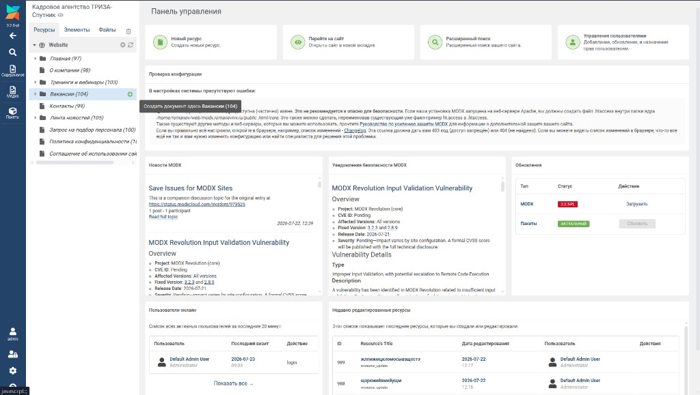
Рис. 2 — Панель управления. Слева видна папка «Вакансии»
Все вакансии хранятся в папке «Вакансии», все новости — в папке «Лента новостей».
3. Как добавить вакансию (пошагово)
Шаг 1. Наведите на папку «Вакансии»
В дереве слева найдите папку «Вакансии». Наведите на неё мышку — справа от названия появится зелёный плюс (+).
Рис. 3 — Наведите на «Вакансии» и нажмите зелёный «+». Подсказка: «Создать документ здесь: Вакансии»
Шаг 2. Заполните окно «Создать документ»
Откроется окно. Заполните:
| Поле | Что писать |
|---|
| Заголовок | Название вакансии, например: «Менеджер по продажам» |
| Тип ресурса | Оставьте «Документ» |
| Родительский ресурс | Должно быть 104 (Вакансии) — подставится автоматически |
| Шаблон | Можно оставить «base» — шаблон вакансии подставится сам при сохранении |
Нажмите зелёную кнопку «Сохранить» внизу окна.
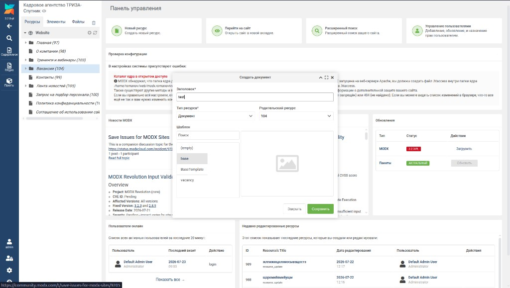
Рис. 4 — Окно «Создать документ»: введите заголовок и нажмите «Сохранить»
Шаг 3. Заполните основные поля
Откроется редактор вакансии. На вкладке «Документ» заполните:
- Заголовок — название вакансии (уже заполнен).
- Псевдоним — адрес страницы (можно не трогать).
- Содержимое — при необходимости дополнительный текст (основные данные — в доп. полях, см. раздел 4).
Справа проверьте:
- Переключатель «Опубликован» — должен быть зелёным (включён).
- Если страница не должна быть в меню — включите «Скрыть из меню».
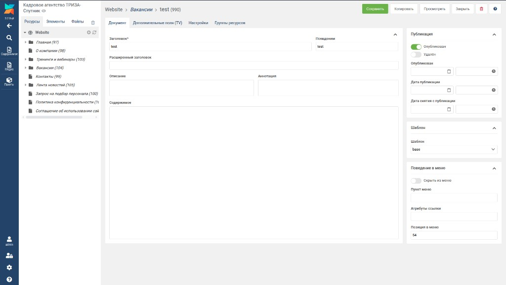
Рис. 5 — Редактор вакансии: вкладка «Документ», справа — «Опубликован»
Шаг 4. Сохраните
Нажмите зелёную кнопку «Сохранить» вверху справа. Внизу появится сообщение «Успешно сохранено».
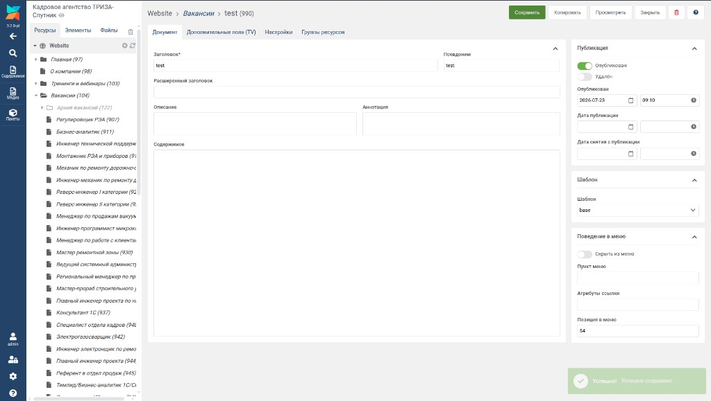
Рис. 6 — После сохранения появляется зелёное сообщение «Успешно сохранено»
Шаг 5. Проверьте на сайте
Откройте на сайте раздел https://modx.romanovivv.ru/vacancy — ваша вакансия должна появиться в списке (новые — сверху).
Можно нажать кнопку «Просмотреть» в админке — откроется страница вакансии на сайте.
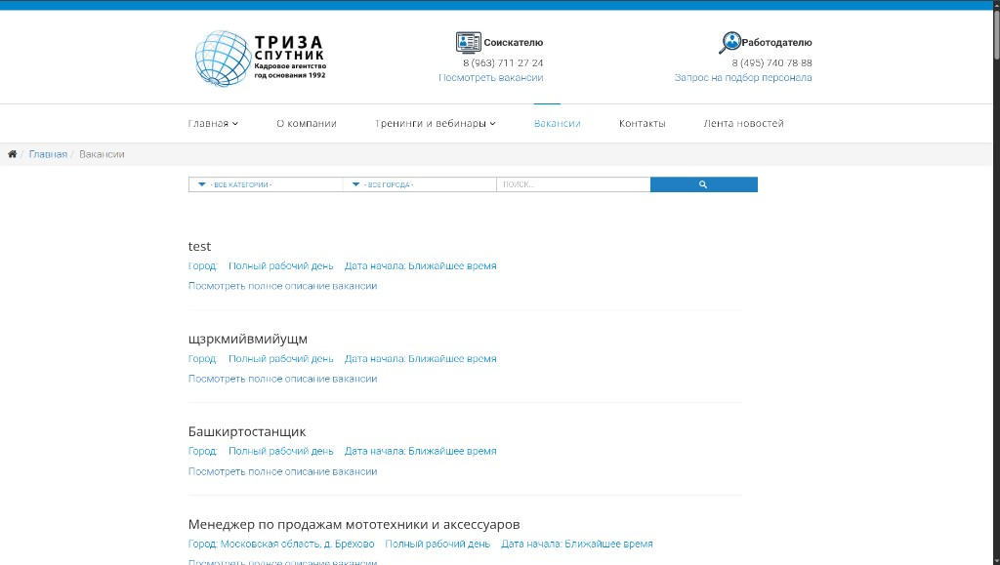
Рис. 7 — Вакансия в списке на сайте (город, тип занятости, дата начала)
4. Дополнительные поля вакансии
Чтобы вакансия отображалась правильно (город, зарплата, требования), перейдите на вкладку «Дополнительные поля (TV)» и заполните:
| Поле | Что указать |
|---|
| Город | Город работы, например: Зеленоград |
| Категория | Выберите из списка (Продажи, IT, Производство…) |
| Тип занятости | Полный день / Вахта / Сменный график |
| Дата начала | Ближайшее время или конкретная дата |
| Заработная плата | Текст про зарплату |
| Требования к кандидату | Что должен уметь кандидат |
| Характер выполняемой работы | Чем будет заниматься |
| Условия работы | График, соцпакет |
| Контакты | Телефон, e-mail (необязательно) |
| Показывать в «Горячие вакансии» | Галочка — вакансия на главной (до 4 штук) |
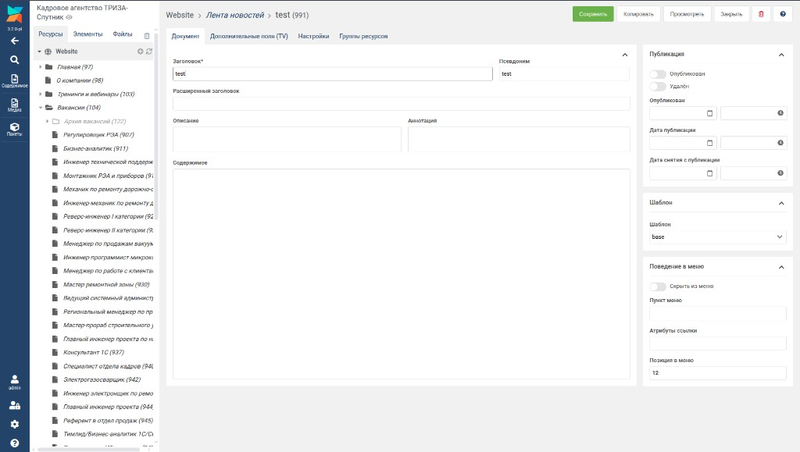
Рис. 8 — Вкладка «Дополнительные поля (TV)»: город, категория, зарплата и др.
После заполнения снова нажмите «Сохранить».
5. Как изменить или убрать вакансию
Изменить
- В дереве слева откройте «Вакансии».
- Щёлкните по нужной вакансии в списке.
- Измените поля на вкладках «Документ» и «Дополнительные поля».
- Нажмите «Сохранить».
Убрать с сайта (не удаляя)
- Откройте вакансию.
- Справа выключите переключатель «Опубликован» (станет серым).
- Нажмите «Сохранить».
Чтобы перенести в архив: в поле «Родительский ресурс» выберите «Архив вакансий» и снимите публикацию.
6. Как добавить новость (пошагово)
Шаг 1. Создайте документ в «Ленте новостей»
В дереве слева найдите папку «Лента новостей». Наведите мышку и нажмите зелёный «+» (как для вакансий).
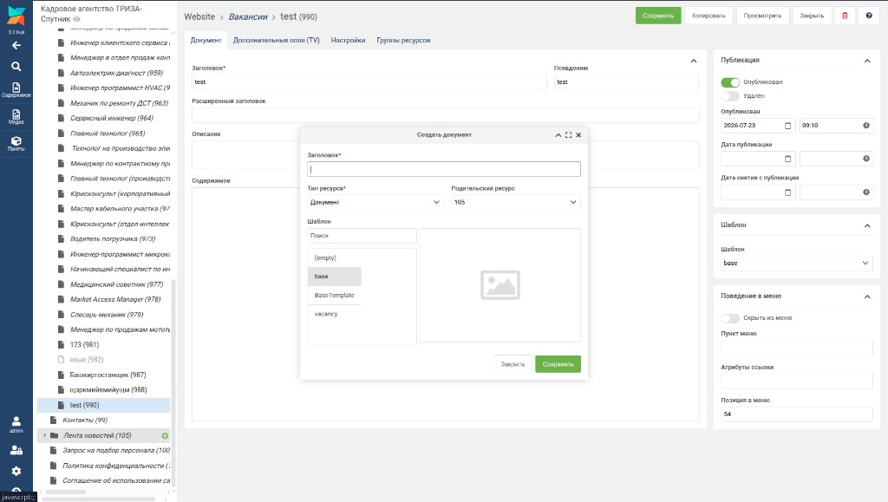
Рис. 9 — Создание новости: родительский ресурс должен быть «Лента новостей» (105)
В окне «Создать документ»:
- Заголовок — короткое название новости.
- Родительский ресурс — должен быть 105 (Лента новостей).
- Нажмите «Сохранить».
Шаг 2. Заполните текст новости
На вкладке «Документ»:
| Поле | Что писать |
|---|
| Заголовок | Короткое название |
| Аннотация | Полный заголовок для списка новостей (если заголовок длинный — пишите сюда) |
| Содержимое | Полный текст новости |
Справа включите «Опубликован» и нажмите «Сохранить».
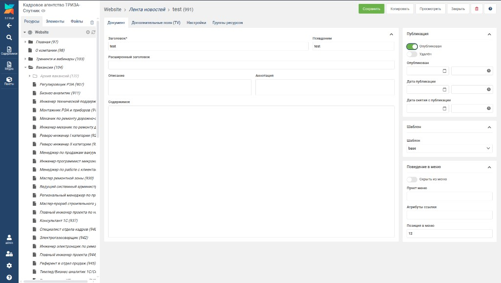
Рис. 10 — Редактор новости: заголовок, аннотация, содержимое
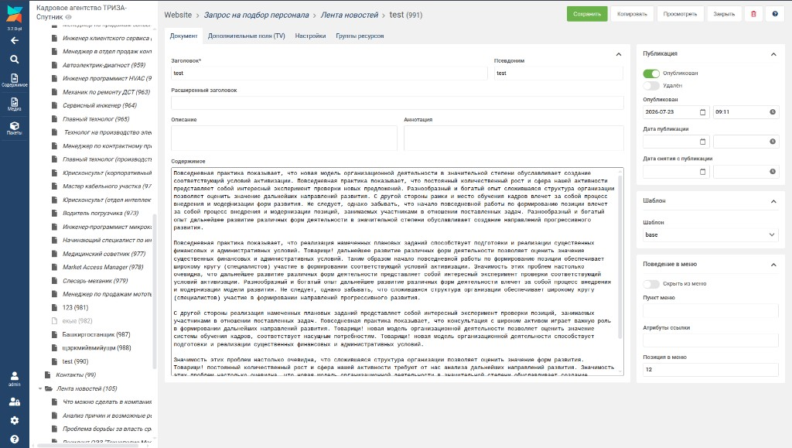
Рис. 11 — Пример заполненного поля «Содержимое»
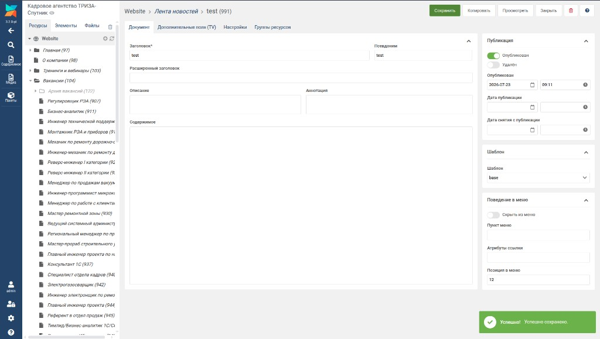
Рис. 12 — Сообщение «Успешно сохранено»
Шаг 3. Проверьте на сайте
Откройте https://modx.romanovivv.ru/blog — новость должна быть в списке (новые — сверху).
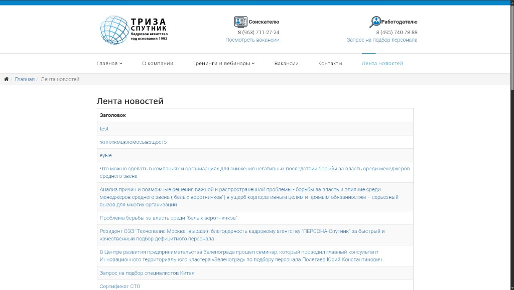
Рис. 13 — Лента новостей на сайте
Нажмите на заголовок — откроется полный текст новости:
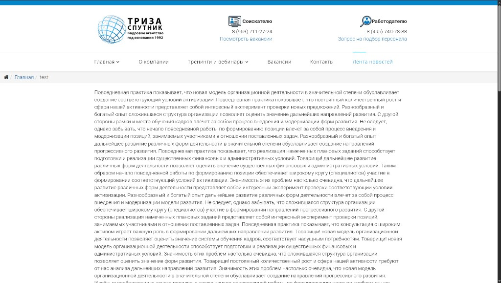
Рис. 14 — Страница новости на сайте
7. Горячие вакансии на главной
На главной странице внизу блок «Горячие вакансии» — показывается до 4 вакансий.
- Откройте вакансию в админке.
- Вкладка «Дополнительные поля (TV)».
- Поставьте галочку «Показывать в „Горячие вакансии" на главной».
- Сохраните.
8. Частые ошибки и шпаргалка
| Проблема | Что сделать |
|---|
| Вакансии нет на сайте | Включите «Опубликован» (зелёный переключатель справа) и сохраните |
| Вакансии нет на сайте | Проверьте, что она в папке «Вакансии», а не в другом разделе |
| Нет города/зарплаты на сайте | Заполните вкладку «Дополнительные поля (TV)» |
| Короткий заголовок в ленте новостей | Заполните поле «Аннотация» полным заголовком |
| Изменения не видны | Нажмите «Сохранить» и обновите сайт (Ctrl+F5) |
Не трогайте: разделы «Элементы», «Пакеты», «Система»; текст [[!jobList]] и [[!newsList]] на страницах — это служебный код.
Шпаргалка
Новая вакансия:
Вакансии → зелёный «+» → Заголовок → Сохранить →
Дополнительные поля (город, категория, зарплата…) → Опубликован ✅ → Сохранить
Новая новость:
Лента новостей → зелёный «+» → Заголовок → Сохранить →
Аннотация + Содержимое → Опубликован ✅ → Сохранить
Убрать с сайта:
Открыть материал → Опубликован ❌ (выключить) → Сохранить
Нужна помощь? Сделайте скриншот экрана и опишите, что делали. Не удаляйте папки «Вакансии» и «Лента новостей».
Инструкция для сайта modx.romanovivv.ru · Кадровое агентство ТРИЗА-Спутник · 2026